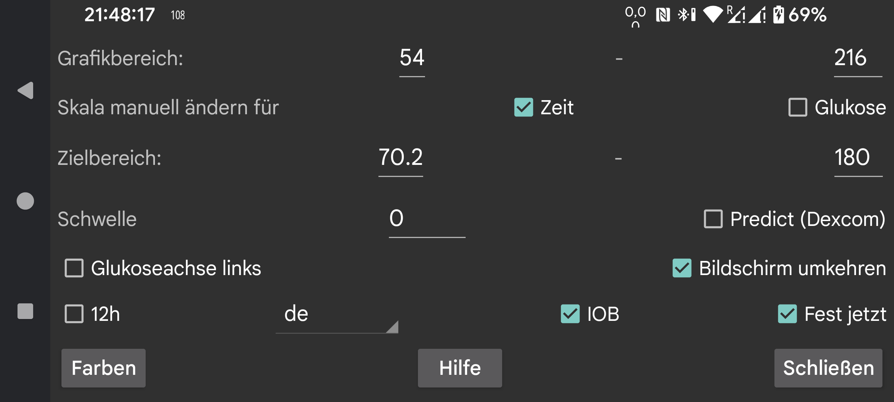

Ändern Sie die Farben von Kurven, Scans und Zahlen.
Geben Sie einen niedrigen und einen hohen Wert an, so dass der untere Teil des Bildschirms dem niedrigsten und der obere Teil dem höchsten Wert entspricht. Diese Werte werden nur verwendet, wenn alle auf dem Bildschirm angezeigten Glukosewerte innerhalb dieser Grenzen liegen. Andernfalls werden die Grenzen erweitert, so dass alle Werte sichtbar sind. Wenn Sie 3 mmol/L (54 mg/dL) und 9 mmol/L (162 mg/dL) messen und alle Werte auf der sichtbaren Anzeige zwischen 5 mmol/L und 6 mmol/L liegen, zeigt das Diagramm eine Glukoseachse von 3 bis 9 an.
Wenn die manuelle Blutzuckerskala aktiviert ist, können Sie dies ändern: Wenn Sie Ihren Finger über den oberen Teil des Bildschirms bewegen, wird die obere Hälfte des Diagramms nach oben und unten verschoben; wenn Sie über den unteren Teil des Bildschirms fahren, wird die untere Hälfte des Diagramms nach oben und unten verschoben.
Die obere Seite der Anzeige ist anders gefärbt, damit Sie hohe Werte leichter erkennen können. Das Gleiche gilt für niedrige Werte. Eine rote Linie zeigt die zu niedrige Seite der Anzeige an.
Platzieren Sie die Zahlen des Blutzuckerspiegels in der Grafik auf der linken Seite des Bildschirms. Nützlich, wenn Sie Ihren aktuellen Blutzuckerwert in der Mitte des Bildschirms anzeigen möchten, z. B. bei Wear OS.
Legen Sie einen Schwellenwert für die Änderungsrate der Glukosewerte fest. Nur wenn die Änderungsrate um den angegebenen Betrag von 0 abweicht, unterscheidet sich der Änderungsratenpfeil von der Horizontalen. Sie können beliebige Werte zwischen 0 und 0.8 verwenden. Der Schwellenwert wird verwendet, um zu verhindern, dass kleinen absoluten Änderungsratenwerten zu viel Bedeutung beigemessen wird. Es ist durchaus möglich, dass die Änderungsrate einen langsam steigenden Glukosewert anzeigt, in Wirklichkeit aber sinkt. Der Schwellenwert dient dazu, eine vorsichtigere Aussage zu treffen.
Drehen Sie das Display auf den Kopf. Es ist standardmäßig eingeschaltet, weil ich sonst hin und wieder beim Scannen eines Sensors versehentlich OK berührt habe.
Manche Leute fragen nach dem Hochformat, aber ich habe das ausgeschaltet, weil es für die Anzeige der Glukosekurve völlig ungeeignet ist.
IOB ist ein Maß dafür, wie viel Insulin von früheren Insulindosen noch vorhanden ist. Hierzu müssen Sie Insulindosen unter einem Etikett in der Kategorie „ Schnell wirkendes Insulin “ eintragen. Sie können im linken Menü→Einstellungen→Daten austauschen→Webserver→ Mengen geben angeben, welche Etiketten „Schnell wirkendes Insulin“ sind.
Wenn „Festgesteckt jetzt“ eingestellt ist, wird der auf dem Bildschirm angezeigte Zeitraum nach links gescrollt, sodass sich die Gegenwart immer an der gleichen Stelle des Bildschirms befindet. Einige Benutzer führen Juggluco auf einem Android-Emulator auf einem Computer aus, der einige Meter von ihnen entfernt ist. Wenn „Festgesteckt jetzt“ ausgeschaltet ist, verschiebt sich die Position des aktuellen Glukosewerts im Laufe der Zeit nach rechts, sodass er nach einigen Stunden nicht mehr sichtbar ist. Dies macht es erforderlich, zum Computer zu gehen und den Bildschirm einige Zentimeter zu scrollen. Wenn „Festgesteckt jetzt“ aktiviert ist, ist diese Ablenkung nicht mehr erforderlich.
Juggluco wird in der gewählten Sprache angezeigt. Wenn kein Sprachcode ausgewählt ist, wird die Systemsprache verwendet.